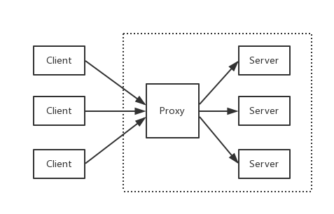
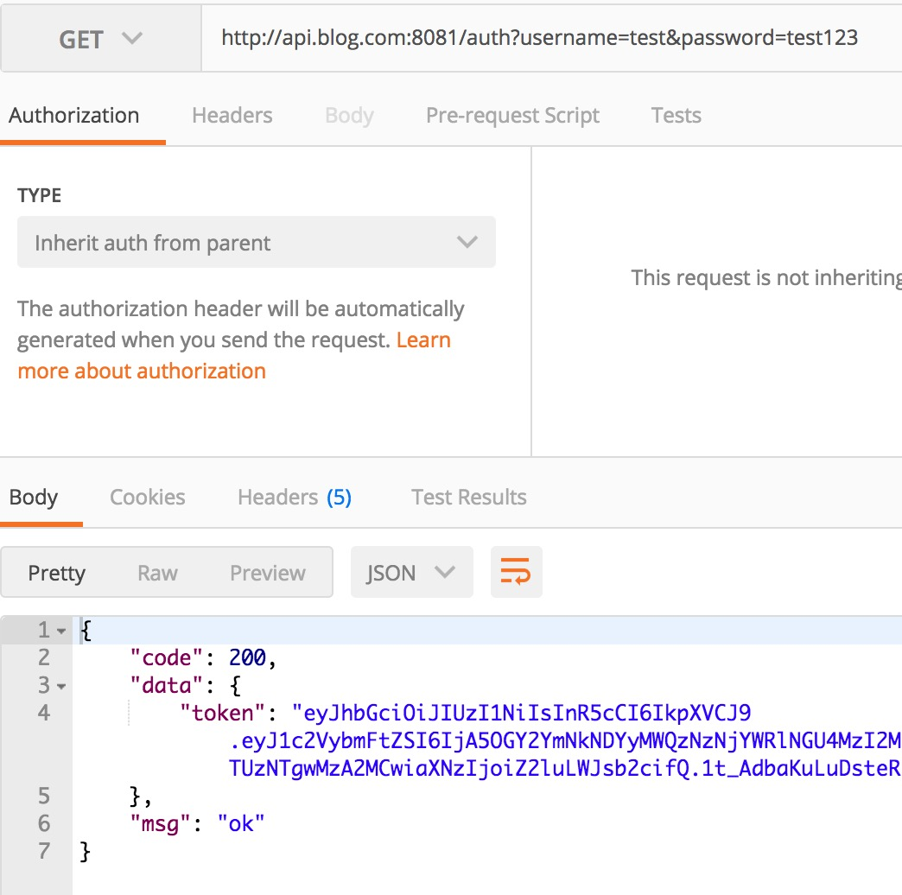
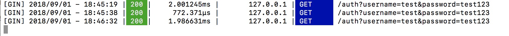
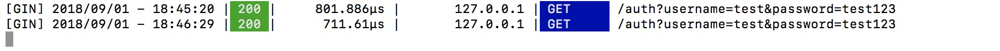

3.17 用Nginx部署Go應用
專案地址：https://github.com/EDDYCJY/go-gin-example
知識點
- Nginx。
- 反向代理。
本文目標
簡單部署後端服務。
做什麼
在本章節，我們將簡單介紹 Nginx 以及使用 Nginx 來完成對 go-gin-example 的部署，會實作反向代理和簡單負載均衡的功能。
Nginx
是什麼
Nginx 是一個 Web Server，可以用作反向代理、負載均衡、郵件代理、TCP / UDP、HTTP 伺服器等等，它擁有很多吸引人的特性，例如：
- 以較低的記憶體佔用率處理 10,000 多個併發連線（每10k非活動HTTP保持活動連線約2.5 MB ）
- 靜態伺服器（處理靜態檔案）
- 正向、反向代理
- 負載均衡
- 透過OpenSSL 對 TLS / SSL 與 SNI 和 OCSP 支援
- FastCGI、SCGI、uWSGI 的支援
- WebSockets、HTTP/1.1 的支援
- Nginx + Lua
安裝
請右拐谷歌或百度，安裝好 Nginx 以備接下來的使用
簡單講解
常用命令
- nginx：啟動 Nginx
- nginx -s stop：立刻停止 Nginx 服務
- nginx -s reload：重新載入設定檔案
- nginx -s quit：平滑停止 Nginx 服務
- nginx -t：測試設定檔案是否正確
- nginx -v：顯示 Nginx 版本資訊
- nginx -V：顯示 Nginx 版本資訊、編譯器和設定引數的資訊
涉及設定
1、 proxy_pass：設定反向代理的路徑。需要注意的是如果 proxy_pass 的 url 最後為 /，則表示絕對路徑。否則（不含變數下）表示相對路徑，所有的路徑都會被代理過去
2、 upstream：設定負載均衡，upstream 預設是以輪詢的方式進行負載，另外還支援四種模式，分別是：
（1）weight：權重，指定輪詢的機率，weight 與訪問機率成正比
（2）ip_hash：按照訪問 IP 的 hash 結果值分配
（3）fair：按後端伺服器響應時間進行分配，響應時間越短優先級別越高
（4）url_hash：按照訪問 URL 的 hash 結果值分配
部署
在這裡需要對 nginx.conf 進行設定，如果你不知道對應的設定檔案是哪個，可執行 nginx -t 看一下
$ nginx -t
nginx: the configuration file /usr/local/etc/nginx/nginx.conf syntax is ok
nginx: configuration file /usr/local/etc/nginx/nginx.conf test is successful
顯然，我的設定檔案在 /usr/local/etc/nginx/ 目錄下，並且測試透過
反向代理
反向代理是指以代理伺服器來接受網路上的連線請求，然後將請求轉發給內部網路上的伺服器，並將從伺服器上得到的結果返回給請求連線的客戶端，此時代理伺服器對外就表現為一個反向代理伺服器。（來自百科）

設定 hosts
由於需要用本機作為演示，因此先把對映配上去，開啟 /etc/hosts，增加內容：
127.0.0.1 api.blog.com
設定 nginx.conf
開啟 nginx 的設定檔案 nginx.conf（我的是 /usr/local/etc/nginx/nginx.conf），我們做了如下事情：
增加 server 片段的內容，設定 server_name 為 api.blog.com 並且監聽 8081 埠，將所有路徑轉發到 http://127.0.0.1:8000/ 下
worker_processes 1;
events {
worker_connections 1024;
}
http {
include mime.types;
default_type application/octet-stream;
sendfile on;
keepalive_timeout 65;
server {
listen 8081;
server_name api.blog.com;
location / {
proxy_pass http://127.0.0.1:8000/;
}
}
}
驗證
啟動 go-gin-example
回到 go-gin-example 的專案下，執行 make，再執行 ./go-gin-exmaple
$ make
github.com/EDDYCJY/go-gin-example
$ ls
LICENSE README.md conf go-gin-example middleware pkg runtime vendor
Makefile README_ZH.md docs main.go models routers service
$ ./go-gin-example
...
[GIN-debug] DELETE /api/v1/articles/:id --> github.com/EDDYCJY/go-gin-example/routers/api/v1.DeleteArticle (4 handlers)
[GIN-debug] POST /api/v1/articles/poster/generate --> github.com/EDDYCJY/go-gin-example/routers/api/v1.GenerateArticlePoster (4 handlers)
Actual pid is 14672
重啟 nginx
$ nginx -t
nginx: the configuration file /usr/local/etc/nginx/nginx.conf syntax is ok
nginx: configuration file /usr/local/etc/nginx/nginx.conf test is successful
$ nginx -s reload
訪問介面

如此，就實作了一個簡單的反向代理了，是不是很簡單呢
負載均衡
負載均衡，英文名稱為Load Balance（常稱 LB），其意思就是分攤到多個操作單元上進行執行（來自百科）
你能從運維口中經常聽見，XXX 負載怎麼突然那麼高。 那麼它到底是什麼呢？
其背後一般有多臺 server，系統會根據設定的策略（例如 Nginx 有提供四種選擇）來進行動態調整，儘可能的達到各節點均衡，從而提高系統整體的吞吐量和快速響應
如何演示
前提條件為多個後端服務，那麼勢必需要多個 go-gin-example，為了演示我們可以啟動多個埠，達到模擬的效果
為了便於演示，分別在啟動前將 conf/app.ini 的應用埠修改為 8001 和 8002（也可以做成傳入引數的模式），達到啟動 2 個監聽 8001 和 8002 的後端服務
設定 nginx.conf
回到 nginx.conf 的老地方，增加負載均衡所需的設定。新增 upstream 節點，設定其對應的 2 個後端服務，最後修改了 proxy_pass 指向（格式為 http:// + upstream 的節點名稱）
worker_processes 1;
events {
worker_connections 1024;
}
http {
include mime.types;
default_type application/octet-stream;
sendfile on;
keepalive_timeout 65;
upstream api.blog.com {
server 127.0.0.1:8001;
server 127.0.0.1:8002;
}
server {
listen 8081;
server_name api.blog.com;
location / {
proxy_pass http://api.blog.com/;
}
}
}
重啟 nginx
$ nginx -t
nginx: the configuration file /usr/local/etc/nginx/nginx.conf syntax is ok
nginx: configuration file /usr/local/etc/nginx/nginx.conf test is successful
$ nginx -s reload
驗證
再重複訪問 http://api.blog.com:8081/auth?username={USER_NAME}}&password={PASSWORD}，多訪問幾次便於檢視效果
目前 Nginx 沒有進行特殊設定，那麼它是輪詢策略，而 go-gin-example 預設開著 debug 模式，看看請求 log 就明白了


總結
在本章節，希望您能夠簡單習得日常使用的 Web Server 背後都是一些什麼邏輯，Nginx 是什麼？反向代理？負載均衡？
怎麼簡單部署，知道了吧。
參考
本系列示例程式碼
關於
修改記錄
- 第一版：2018年02月16日釋出文章
- 第二版：2019年10月01日修改文章
？
如果有任何疑問或錯誤，歡迎在 issues 進行提問或給予修正意見，如果喜歡或對你有所幫助，歡迎 Star，對作者是一種鼓勵和推進。
我的微信公眾號